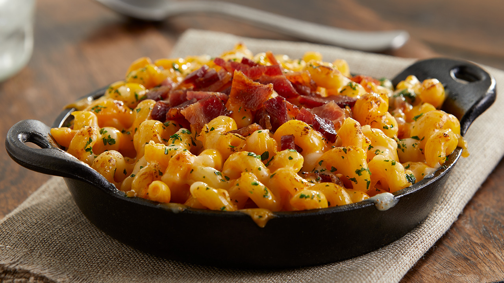

Smoked Recipes

Smoked Mac and Chesse
Mac and Chesse slow cooked in the smoker
- 1 (12 ounce) package bacon
- 1 (12 ounce) package elbow macaroni
- 2 cups heavy cream
- 1 (16 ounce) package shredded extra-sharp Cheddar cheese
- 1 (8 ounce) package shredded Colby-Jack cheese
- 1 cup sour cream
- 1 cup mayonnaise
- 2 tablespoons butter
- 2 tablespoons barbeque rub
- Preheat the oven to 400 degrees F (200 degrees C).
Line a pizza pan with aluminum foil; lay bacon strips on top.
- Bake bacon in the preheated oven until browned and crisp, about 15 minutes.
- Meanwhile, bring a large pot of lightly salted water to a boil. Cook elbow macaroni in the boiling water,
stirring occasionally, until tender yet firm to the bite, about 8 minutes. Drain.
- Drain bacon slices on paper towels and allow to cool slightly, about 5 minutes.
Place in the bowl of a food processor;
pulse until crumbly.
- Preheat a smoker to 275 to 300 degrees F (135 to 150 degrees C).
Add wood chips according to manufacturer's directions.
- Mix together cream, Cheddar cheese, Colby-Jack cheese, sour cream, mayonnaise, butter,
and barbeque rub in the warm pasta pot;
add drained macaroni. Mix well and let the cheese melt.
Pour into a 9x13-inch aluminum pan and sprinkle bacon on top.
- Place the pan on the rack in the preheated smoker.
Cook until cheese is bubbly, about 3 1/2 hours.
enjoy!